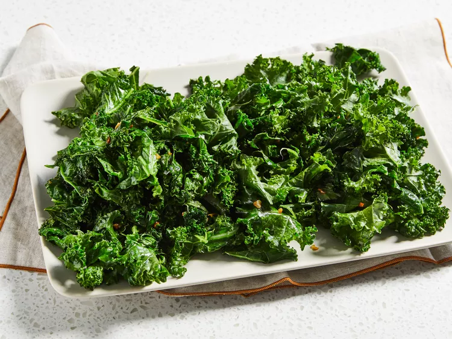

Garlic Kale

How to make easy Garlic Kale
It is a 3 ingredients dish that can be done within 15 minutes.
- Soak kale leaves in a large bowl of water until dirt and sand begin to fall to the bottom.
- Chop the kale leaves into 1-inch pieces.
- Heat olive oil in a large skillet over medium heat; cook and stir garlic until sizzling, about 1 minute.
- Add kale to the skillet and place a cover over the top.
- Cook, stirring occasionally with tongs, until kale is bright green and slightly tender, 5 to 7 minutes. Enjoy!